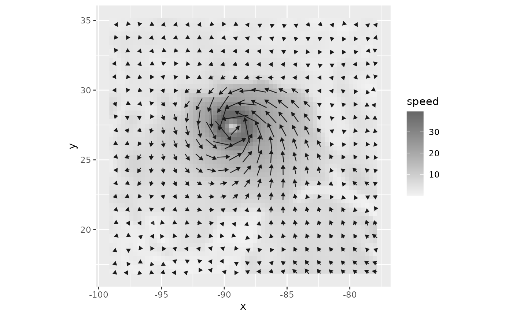
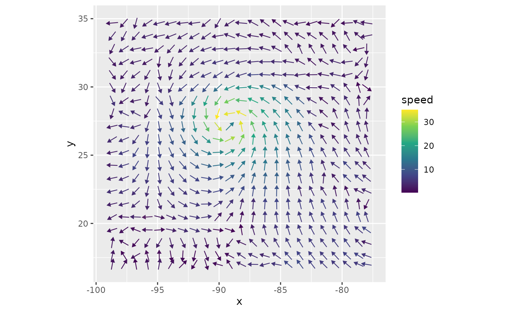
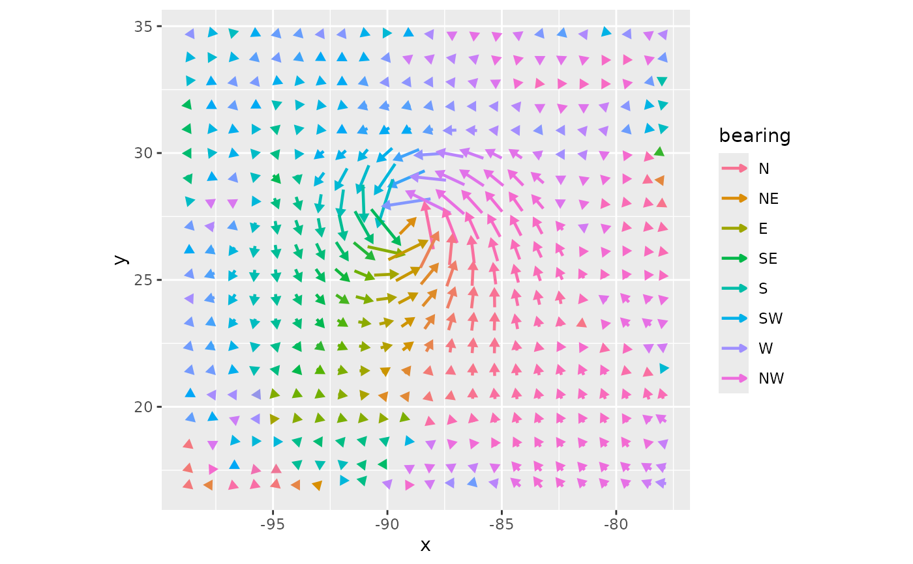

Wind field arrows
geom_wind_arrow.RdDraws an arrow for each block of grid cells in a wind field, showing the direction and speed
of the block's mean wind vector. stat_wind_arrow() averages wind components over blocks
and computes arrow positions; geom_wind_arrow() draws them.
Usage
geom_wind_arrow(
mapping = NULL,
data = NULL,
stat = StatWindArrow,
position = "identity",
...,
res = 20,
scale = 1,
fixed_length = FALSE,
pivot = 0.5,
arrow = grid::arrow(length = grid::unit(0.12, "cm"), type = "closed"),
saturation = 0.5,
center = FALSE,
na.rm = FALSE,
show.legend = NA,
inherit.aes = TRUE
)
stat_wind_arrow(
mapping = NULL,
data = NULL,
geom = GeomWindArrow,
position = "identity",
...,
res = 20,
scale = 1,
fixed_length = FALSE,
pivot = 0.5,
arrow = grid::arrow(length = grid::unit(0.12, "cm"), type = "closed"),
saturation = 0.5,
center = FALSE,
na.rm = FALSE,
show.legend = NA,
inherit.aes = TRUE
)Arguments
- mapping
Aesthetic mappings created by
ggplot2::aes().xandy(cell center coordinates, in degrees longitude and latitude) must be mapped, usually in the plot's main call:ggplot(field, aes(x, y)). The wind componentsu(eastward) andv(northward) are mapped automatically to columns of the same names, as produced byfortify()on awind_field(see fortify.windscape). If your columns are named differently, map them in this layer'smappingrather than inggplot2::ggplot().- data
A data frame, or a
wind_field, which is converted withfortify(). Default is to inherit the plot's data. The data must have one wind vector per grid cell in each panel and group, so to plot awind_series, select a time step withsubset_series()or facet bytime.- stat, geom
Use to override the default pairing of
stat_wind_arrow()andgeom_wind_arrow().- position
Position adjustment; see
ggplot2::layer().- ...
Other arguments passed to
ggplot2::layer(), such as fixed aesthetics likecolor = "white"orlinewidth = 1.- res
Approximate number of arrows along the longer side of the data's extent. Blocks of grid cells are sized to be approximately square in km, and the same blocks are used in every panel. Default 20.
- scale
Multiplier for the length of all arrows. At the default of 1, an arrow at the 90th percentile of speed across the layer (including all panels) is 0.9 times the spacing between arrows, or with
fixed_length = TRUE, every arrow is.- fixed_length
Logical: give all arrows the same length, so that length shows only direction? Default
FALSE(length proportional to speed). Use with a speed mapping such asaes(color = after_stat(speed))oraes(linewidth = after_stat(speed))to encode speed another way. Blocks with zero mean wind get no arrow.- pivot
Position of the arrow relative to its block center, as the fraction of its length that lies behind (upwind of) the center: 0.5 (the default) centers the arrow on the block, 0 starts it at the center.
- arrow
Arrowhead specification created by
grid::arrow(), orNULLfor none.- saturation
If a
consistencyaesthetic is mapped (e.g.aes(consistency = after_stat(consistency))), arrow colors are blended toward gray where consistency is below this value. Default 0.5; set to 0 to disable blending.- center
Logical: draw a point at each block center? Default
FALSE. Withpivot = 0andarrow = NULL, this gives a point-and-spoke plot.- na.rm, show.legend, inherit.aes
See
ggplot2::layer().
Details
Wind components are averaged as vectors, so the arrow shows the block's net wind. Arrows are
built in longitude/latitude coordinates, scaled so that their directions and relative lengths
are correct in km at each block's latitude. Use ggplot2::coord_quickmap() or
ggplot2::coord_sf() with a longitude/latitude CRS.
Computed variables
bearing: direction of the block's mean wind vector, in degrees clockwise from north.speed: speed of the mean wind vector, in the units ofuandv. This sets arrow length.mean_speed: mean of the wind speeds of the block's cells.consistency:speed / mean_speed, the spatial coherence of wind direction within the block; 1 where all cells' winds point the same way, lower where they diverge, converge, or rotate (as in a cyclone's eye), meaning the arrow understates the block's winds.n: number of grid cells in the block.x0,y0: block center, the mean coordinates of its cells.
Examples
library(ggplot2)
katrina <- windscape_example("wind_field")
# map background variables in the raster layer, not in ggplot(), so that the arrow layer
# doesn't inherit them
ggplot(katrina, aes(x, y)) +
geom_raster(aes(fill = speed)) +
scale_fill_gradient(low = "gray95", high = "gray40", name = "speed") +
geom_wind_arrow() +
coord_quickmap()

# fixed-length arrows, with speed shown by color
ggplot(katrina, aes(x, y)) +
geom_wind_arrow(aes(color = after_stat(speed)), fixed_length = TRUE) +
scale_color_viridis_c() +
coord_quickmap()

# arrows colored by direction
ggplot(katrina, aes(x, y)) +
geom_wind_arrow(aes(color = after_stat(bearing)), linewidth = 0.8) +
scale_color_bearing() +
coord_quickmap()
